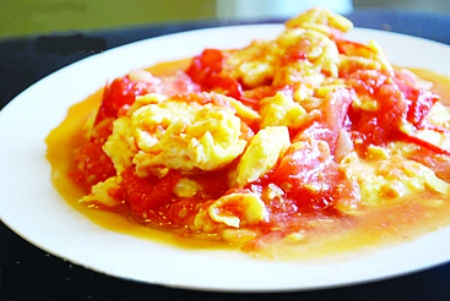

Tomato and Egg

Tomato and Egg is a traditional Chinese cuisine which goes well with rice.
Ingredients:
Steps:
- Stir the eggs
- Cook the eggs in a pan, then take them out once done
- Cook the tomatoes in the same pan until soft
- Throw the eggs back in, done!
Back to Homepage